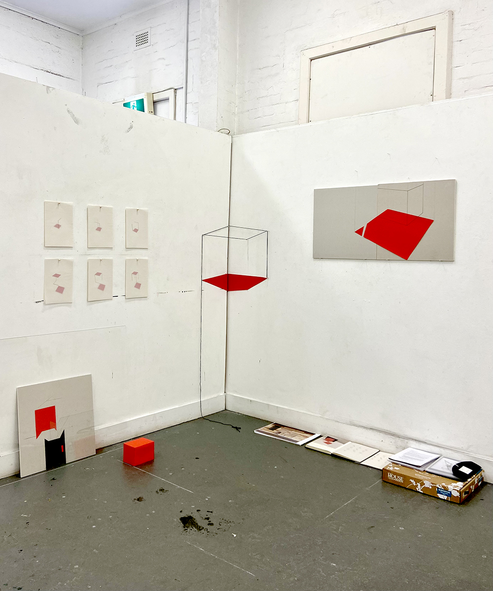
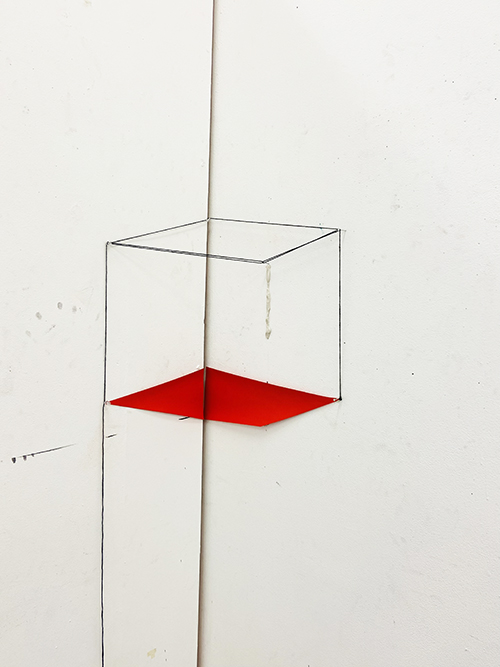
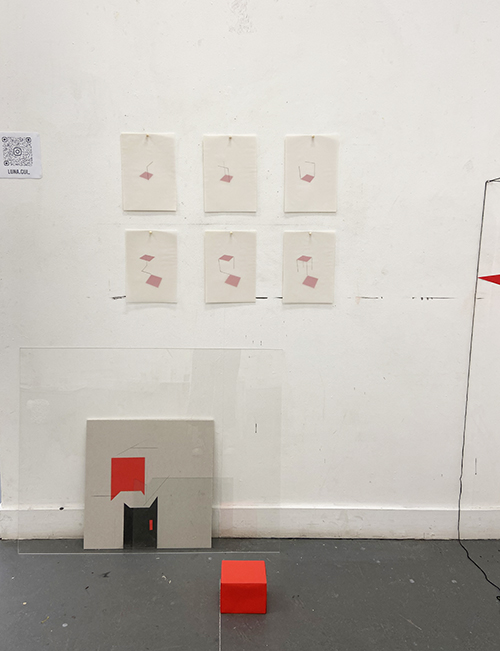
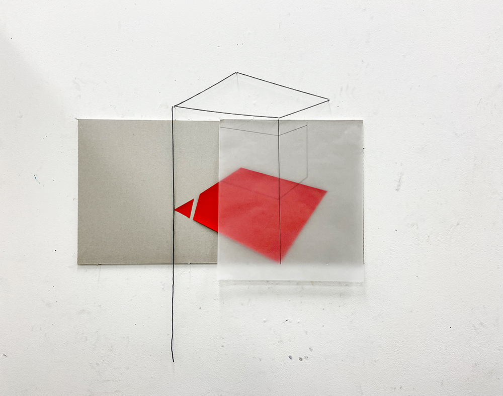
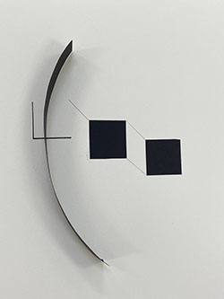
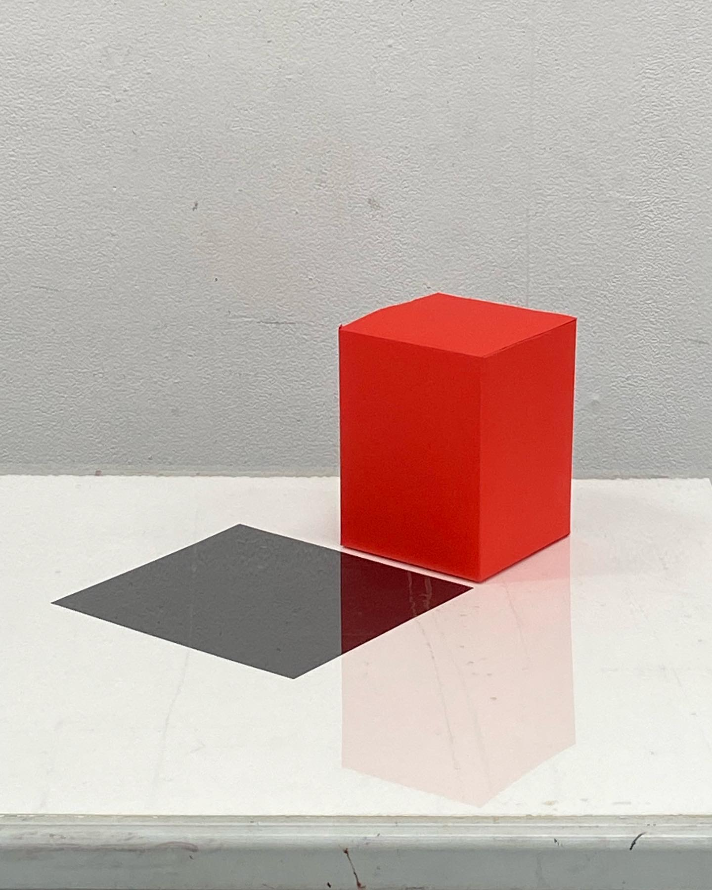
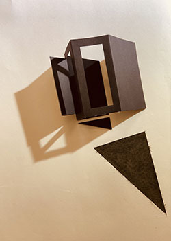
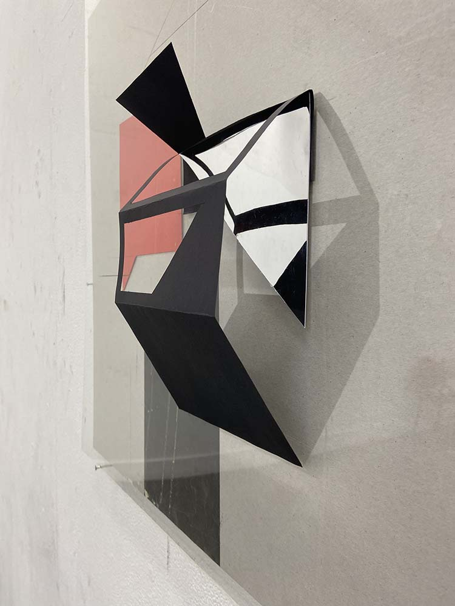
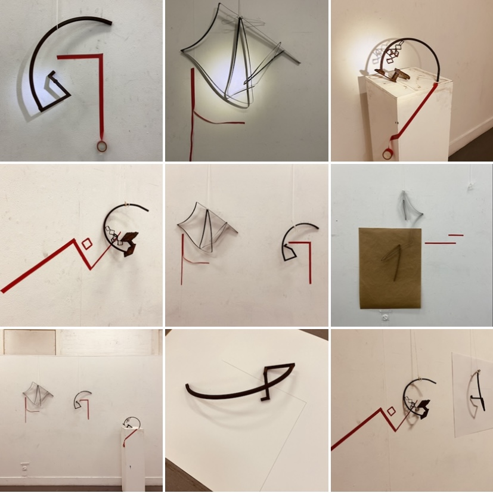
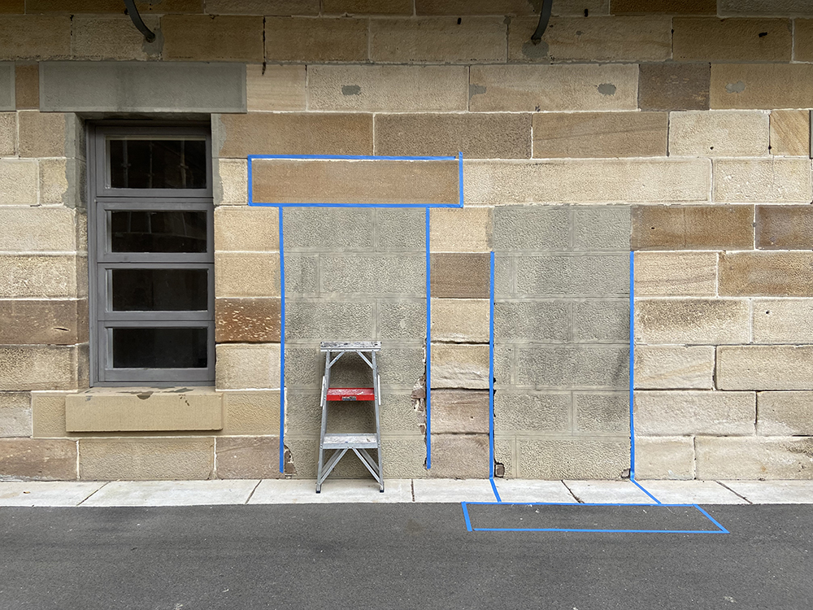

Open Cube2 2022
Award: 2022 John Olsen Prize for Drawing (Highly Commended)
This project started with exploring the relationship between the 2D forms and 3D structures. It leads to a big concept about connecting real space and illusionary space. My final work showing here is a play of visual space in layers.
Artists and Theory influenced my work:
Margel Hinder exhibition in Art gallery of NSW, Modern in Motion,2021
Robert Smithson’s work and writing,1970
Howard Hinton: The Fourth Dimension,1906
Frances Colpitt’s book, Minimal Art: The Critical Perspective,1990
Sol Lewitt: Variations of incomplete open cubes,1974

Plaster board, Red paper, tracing paper, black yarn, Acrylic sheet, glass, ink, pencil, charcoal, pins, nails.
This is a site-specific installation I developed from a red paper cube I made. The corner of the setting forms a natural ‘open cube’ which a viewer can walk in, while every part of the installation is a variation or interpretation of cube inside a cube. The work incorporates the ink marks left by others with black yarn extended on the floor, combined with white lines on the floor, constructed a complex outer cube.

Corner installation
This corner is a mind twisting setting, which can only be worked out by walking around.

Left Wall
I decide to make a group of small works on the left to compensate the other two big ones. The work lining on the wall is an early work explores the layering and reflective effects. The red box on the floor is my most important device during the year. They were placed carefully to form another layer of variations.
Concept drawing group
Ink on Tracing paper, red paper on off white paper 150gsm.
This group was inspired by Sol Lewitt's work: Variations of incomplete open cubes. Minimize the elements and play with layering, I really enjoy the simplicity of them. They have been chosen as a part of Grad Show at NAS in 2022.

4th Dimension installation
Plaster board, Tracing paper, ink, red paper, black yarn, nails.
My project is all about space. Inspired by Hinton’s The Fourth Dimension, I made a model implies it, and at same time, reminds us the physical space. It was altered at the final setting to avoid the repetition of the black yarn.
Other exploration during the year

Non-negtive
Black paper, pencil, and ink on paper.

Not A Cube
Red paper box, acrylic sheet, black paper on paper.

Altered Trapezoid
black paper, charcoal on paper.

Trapezoid reflection
Plaster board, acrylic sheet, red paper, pencil, charcoal, mirror sheet.

Steal Configurations
Mild steal pieces, red tape, brown paper

Ladder with Sealed doors
blue tape, ladder, NAS campus
Walking around the NAS campus, you will notice there are many parts of the wall appear different color with surrounding sandstone bricks. They were casted from same sandstone model with cement. Most of them are door shapes.